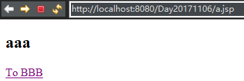
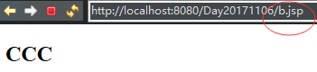

请求重定向与请求转发
本质区别：请求的转发只发出了一次请求，而重定向则发出了两次请求。
具体区别：
①
- 请求的转发：地址栏是初次发出请求的地址。
- 请求的重定向：地址栏不再是初次发出的请求地址。地址栏为最后响应的那个地址。
②
- 请求转发：在最终的Servlet中，request对象和中转的那个request是同一个对象
- 请求重定向：在最终的Servlet中，request对象和中转的那个request不是同一个对象
③
- 请求转发：只能转发给当前WEB应用的资源
- 请求重定向：可以重定向到任何资源。
④
- 请求转发：/ 代表当前WEB应用的根目录(例如：Day30 –localhost:8989/Day30)
- 请求重定向：/ 代表当前WEB站点的根目录(站点，例如 localhost:8989)
例：a.jsp12<h2>aaa</h2><a href="b.jsp">To BBB</a>
b.jsp12345<h2>BBB</h2><% // 1.請求轉發的代碼 request.getRequestDispatcher("/c.jsp").forward(request, response);%>
c.jsp1<h2>CCC</h2>


如上图，请求转发后，页面改变了，但是浏览器地址栏没变
重定向(改变b.jsp代码)：12345<h2>BBB</h2><% // 2.請求重定向的代碼 response.sendRedirect("http://www.baidu.com");%>